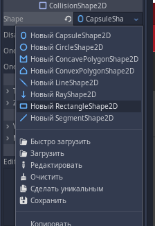

Мы с вами уже изучили достаточно для того, чтобы импровизировать в движке и пробовать что-то создавать. Мы уже работали с сигналами (привязывали сигнал к кнопке, в качестве получателя указывая кнопку), реагировали на события (_ready(), _init(), _process() и т.д.), работали со сценами (инициализировали узел Sprite в качестве сцены, создавали новую сцену, клонировали). В общем-то на этом можно завершить, если бы нам не было необходимости подкрепить знания дополнительными знаниями и заданием.
Начнём со структуры проекта. Каждый наш проект состоит из файлов – файловая система проекта, это папка. Проект наш состоит из узлов, самые первостепенные узлы – это сцены, с вложенными, также, узлами. Значение структуры проекта для движка не классифицируется, определять важность элементов проекта мы вольны только сами и только для себя. Однако вы скорей всего не обратили внимание на то, что узлы в окне добавления узла разных цветов. Цвета обозначают принадлежность узла.
Обратите внимание что последний элемент (World Environment) имеет два цвета – зелёный и синий. Это значит, что он используется как для 2D-, так и для 3D-пространства.
Так же структура проекта устроена таким образом, что мы можем мешать эти пространства мешать между собой. Так, например, мы можем в 2D сцену добавить 3D сцену, или в 3D сцену добавить 2D сцену (например, для воссоздания плоского экрана настроек, интерфейса пользователя, либо каких-нибудь сторонних механик как, например, 3D куб с магическими рунами в вашей 2D игре про волшебника и т.д.). Естественно, для каждой сцены будут свои требования. Так, например, для 3D сцены обязательна камера, картинку с которой мы могли бы отображать.
В данном случае к корневому узлу сцены дочерним привязан узел пространства (Spatial), в котором мы и можем реализовывать 3D функционал. Спрайт, который лежит поверх куба является 2D объектом, который рисуется в 2D сцене в отличие от 3D куба. Так же должен заметить, что элементы отрисовываются по дереву сцены сверху вниз. Это значит, что последний элемент дерева сцены будет отрисован последним поверх всех остальных элементов.
О скриптах – назначить скрипт мы можем абсолютно любому узлу, находящемуся в дереве нашей сцены вне зависимости от назначения узла. В том числе скрип можно навешать и на корневой узел сцены.
О событиях – у нас есть некоторые предопределённые события, которые мы можем обрабатывать.
Объяснять их работу не имеет смысла – мы с вами научились пользоваться справкой, и при необходимости вы их можете найти в справке к узлу «Node». Как вызвать справку относительно объекта, так и создать скрипт для Node и с заатой клавишей «ctrl» кликнуть на extend Node. Мы уже выяснили что методы, которые начинаются с нижнего подчёркивания – это события которые так или иначе вызываются неявно, и мы их можем описать и обработать.
Важно только отметить что в функции _input(event) мы можем испольовать event для проверки управления, и реагировать на входящие сигналы с клавиатуры, мыши, геймпда и т.д. Маршрутизацию вы можете посмотреть, выбрав в главном меню движка «Проект» -> «Настройки проекта», и выбрать вкладку «Список действий». Там вы можете увидеть стандартный список действий, либо определить свой добавив нужные триггеры.
Создайте новый проект, и зайдите в список действий для определения клавиш управления. Настраивать проект как мы делали это в начале не нужно пока мы практикуем навыки, но при создании серьёзного проекта рекомендую-таки к настройке проекта обратиться.
Посмотрите там необходимые нам клавиши для управления. Стандартные клавиши управления в платформере – движение влево, движение вправо и прыжок (ui_left, ui_right, ui_up). Удалите из ui_up клавишу клавиатуры и добавьте туда клавишу «Пробел». Этими клавишами мы будем в дальнейшем пользоваться.
В новом проекте, чтобы нам реализовать платформер, необходимо задействовать коллайдер. Коллайдер – это объект который проверяет коллизии (столкновения), и реагирует на них должным образом. Так, например, ваш коллайдер, пока вы это читаете, сталкивается с полом, со стулом и т.д. Пока вы сидите на стуле – ваш коллайдер реагирует должным образом, он не позволяет вам упасть сквозь стул.
Для таких объектов есть своя реализация:
Если с гравитацией RigidBody вы разберётесь, то у кинематика мы сделаем гравитацию самостоятельно.
Для начала нам нужен пол, по которому мы будем передвигаться – создайте StaticBody2D. При создании вы обратите внимание что он помечен восклицательным знаком. Движок сообщает нам что в данный момент твёрдое тело не имеет коллизий, а потому не существует как твёрдое тело. Чтобы это исправить – добавим ему узел CollisionShape2D, и в инспекторе узла CollisionShape2D укажем нужную нам форму (shape). Обычно для персонажей предпочтительнее выбирать CapsuleShape, так как у него скруглённые грани, что позволяет миновать некоторые трудности настройки управления. Однако для пола будет удобнее выбрать RectangleShape.
Теперь узлу StaticBody2D добавим какой-нибудь спрайт, чтобы видеть наш пол. Настроим так, чтобы форма коллайдера и наша картинка были одного размера – подгоним форму под картинку. Вы можете загрузить из картинок что угодно, я буду пользоваться тем, что уже есть.
Теперь сделаем персонажа. Делаем то же самое, только добавляем уже KinematicBody2D, и в качестве формы коллайдера указываем, как и ранее упоминалось, CapsuleShape. Чтобы переместить персонажа после создания в нужное мест и при этом не таскать элементы по отдельности – используйте кнопку связки из верхней панели вьюпорта. Вот что получилось у меня:
Теперь надо заставить нашего персонажа двигаться. Как я и говорил – кинематик не понимает сил окружающей срежы, а значит нам необходимо ему сделать гравитацию самостоятельно. Для его передвижения по двум осям необходимо завести две переменные его направлений,
var speedX = 0
var speedY = 0
и далее мы будем их сдвигать в _process(delta). Проверка на столкновения с полом осуществляется is_on_floor(). Соответственно мы должны проверить – пока мы не на полу, увеличиваем скорость движения вниз, иначе обнуляем скорость движения вниз
func _process(delta):
if !is_on_floor():
speedY += 2
else:
speedY = 0
Далее нужно сделать проверку на нажатие кнопок, и реализовать движение. Так как наши клавиши уже проведены в списке действий – нам необходимо обратиться непосредственно к нему, и в зависимости от нажатия клавиш задавать скорость по горизонтали.
if Input.is_action_pressed("ui_left"):
speedX = -200
elif Input.is_action_pressed("ui_right"):
speedX = 200
else:
speedX = 0
А дальше нам необходимо сделать проверку на прыжок. Прыжок, заметим, должен выполняться строго с пола. Сделаем такую проверку и изменим вертикальное смещение вверх.
if is_on_floor() and Input.is_action_pressed("ui_up"):
speedY -= 300
Остаётся только применить наши смещения по скорости.
move_and_slide(Vector2(speedX, speedY), Vector2(0, -1))
Заметим, что на move_and_slide мы подаём два вектора. Первый вектор – это наше смещение, которое должно произойти если столкновение не определится. Второй же вектор смещает нашего персонажа чуть-чуть вверх, чтобы проверка не определила столкновение с полом. Если второй вектор не будет смещать немного вверх – движок будет думать, что при смещении есть столкновение (с полом), а значит наш персонаж упёрся в стену.
Весь код:
extends KinematicBody2D
var speedX = 0
var speedY = 0
func _process(delta):
if !is_on_floor():
speedY += 2
else:
speedY = 0
if Input.is_action_pressed("ui_left"):
speedX = -200
elif Input.is_action_pressed("ui_right"):
speedX = 200
else:
speedX = 0
if is_on_floor() and Input.is_action_pressed("ui_up"):
speedY -= 300
move_and_slide(Vector2(speedX, speedY), Vector2(0, -1))
Давайте сделаем так, чтобы камера двигалась за персонажем а чтобы заметить эффект смещения – добавьте на сцену каких-нибудь картиночек, которые будут дочерними к узлу Node2D. Узел Camera2D мы поместим дочерней нашему KinematicBody2D, и проиведём её небольшую настройку. В инспекторе выставим ей параметр Anchor Mode на Fixed Top Left, и включим Current чтобы она была камерой по умолчанию.
Запускаем проект, и любуемся результатом!